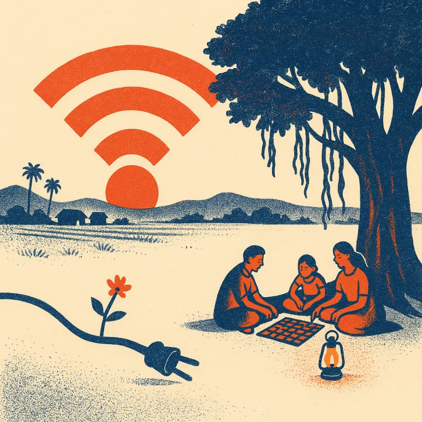
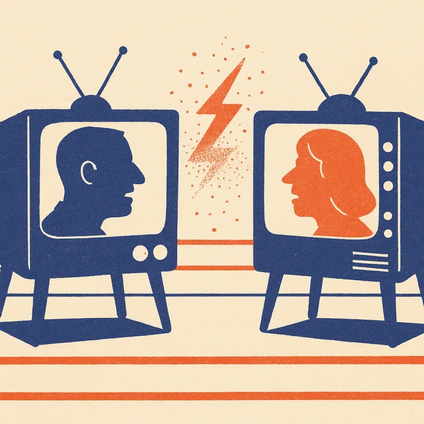
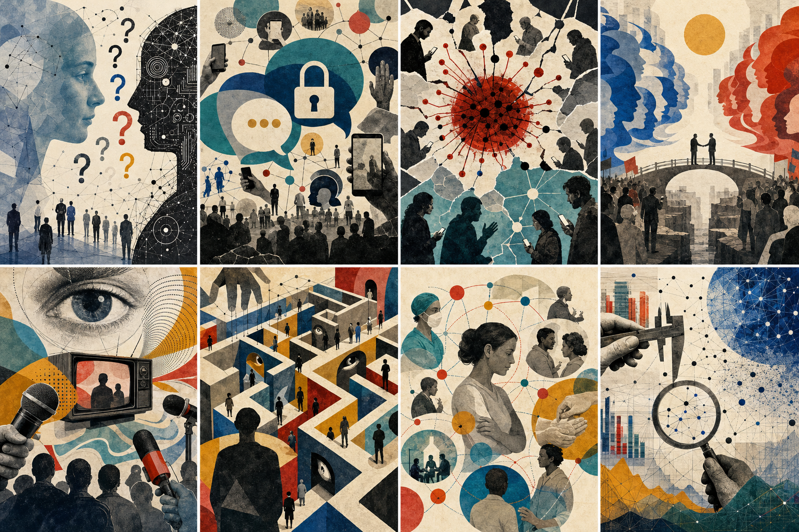

publications.html serves one of the four designs below at random per visit (never the same one twice in a row). The design stays put while you browse and across reloads — the "↻ shuffle" button in each design's top bar is what deals a new one. Force a specific design with ?pub=1..4.

The whole archive as a walk through the orchard: eighteen trees, 2027 back to 2010, each grown from that year's papers. Branches grow and fruits ripen continuously as you scroll; the horizon strip jumps between years; seedlings sprout in the greenhouse.
walk the orchard →
All 117 papers issued as stamps across 19 album plates — one per year plus a proofs page for work under review. Catalog numbers run from № 001 (the 2010 thesis), and postmark cities follow the desk where each paper was written: Hyderabad, Doha, Helsinki, Cambridge, New Brunswick.
open the album →
The growing archive through two clear entrances: an expandable year index and eight illustrated research fields. Papers appear only inside the year or field you choose.
open the field guide →The original page, unchanged: every paper grouped by year, in whatever site theme loads. Fastest to skim, easiest to ctrl-F — it earns its spot in the rotation.
read the list →Research threads as colored subway lines through time; papers as stations, cross-topic papers as interchanges. A good map of how the work evolved, but a weak stage for the illustrations.
The night-sky constellation view didn't earn its keep. The file is still at publications-sky.html if you ever want to revisit (or delete) it — it's out of the rotation.
?pub=N forces a design.assets/pub-art/generate_pub_art.py from hand-written visual briefs in assets/pub-art/papers-meta.json. To illustrate a new paper: add its entry there, run build_manifest.py then generate_pub_art.py manifest_all.json.slug and hand-tagged topics; all four designs read the same archive. Typos fixed (IWCSM, WhatsAppp); the 2027 "LLM Assisted Rule Creation" venue was changed to ICWSM 2027 — worth double-checking.